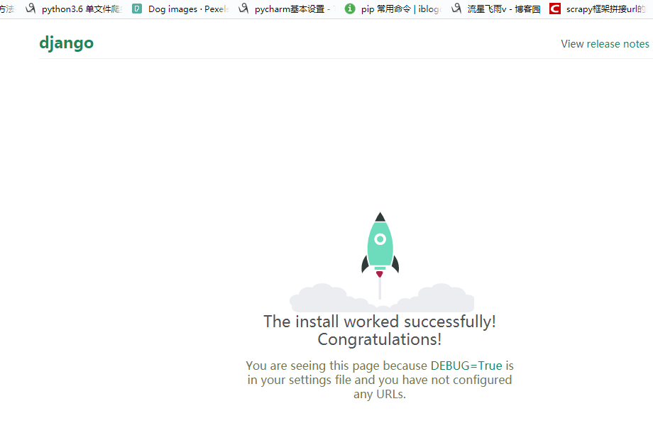

阿里云服务器开启端口8001,9001
创建一个虚拟环境
virtualenv -p python3 web2使虚拟环境生效
source web2/bin/activate虚拟环境中安装django和uwsgi
pip install django
pip install uwsgi创建一个django项目
django-admin.py startproject myweb2修改项目中的settins.py文件
ALLOWED_HOSTS = ['www.terroristhouse.com','terroristhouse.com','119.23.204.209']指定端口，启动django项目看是否正常。
python3 manage.py runserver 0.0.0.0:8001创建uwsgi配置文件，
vi /etc/uwsgi/uwsgi9001.ini写入以下内容
[uwsgi]
uid=root
gid=root
socket = 127.0.0.1:9001
master = true
vhost = true
no-site = true
workers = 2
reload-mercy = 10
vacuum = true
max-requests = 1000
limit-as = 512
buffer-size = 30000
pidfile = /var/run/uwsgi9001.pid
daemonize = /var/log/uwsgi9001.log
pythonpath=/root/web/lib/python3.7/site-packagesvi /etc/init.d/uwsgi9001#! /bin/sh
DESC="uwsgi daemon"
NAME=uwsgi9001
DAEMON=/usr/local/bin/uwsgi
CONFIGFILE=/etc/uwsgi/$NAME.ini
PIDFILE=/var/run/${NAME}.pid
SCRIPTNAME=/etc/init.d/$NAME
FIFOFILE=/tmp/uwsgififo
set -e
[ -x "$DAEMON" ] || exit 0
do_start() {
if [ ! -f $PIDFILE ];then
$DAEMON $CONFIGFILE || echo -n "uwsgi running"
else
echo "The PID is exit..."
fi
}
do_stop() {
if [ -f $PIDFILE ];then
$DAEMON --stop $PIDFILE || echo -n "uwsgi not running"
rm -f $PIDFILE
echo "$DAEMON STOPED."
else
echo "The $PIDFILE dosen't found"
fi
}
do_reload() {
if [ -p $PIDFILE ];then
echo w > $FIFOFILE
else
$DAEMON --touch--workers--reload $PIDFILE || echo -n "uwsgi can't reload"
fi
}
do_status() {
ps aux|grep $DAEMON
}
case "$1" in
status)
echo -en "Status $NAME: \n"
do_status
;;
start)
echo -en "Starting $NAME: \n"
do_start
;;
stop)
echo -en "Stopping $NAME: \n"
do_stop
;;
reload|graceful)
echo -en "Reloading $NAME: \n"
do_reload
;;
*)
echo "Usage: $SCRIPTNAME {start|stop|reload}" >&2
exit 3
;;
esac
exit 0设置权限
chmod 755 /etc/init.d/uwsgi9001配置nginx.conf 增加第二个项目的代码
user root;
#user nobody;
worker_processes 2;
#error_log logs/error.log;
#error_log logs/error.log notice;
#error_log logs/error.log info;
#pid logs/nginx.pid;
events {
worker_connections 1024;
}
http {
include mime.types;
default_type application/octet-stream;
#log_format main '$remote_addr - $remote_user [$time_local] "$request" '
# '$status $body_bytes_sent "$http_referer" '
# '"$http_user_agent" "$http_x_forwarded_for"';
#access_log logs/access.log main;
sendfile on;
#tcp_nopush on;
#keepalive_timeout 0;
keepalive_timeout 65;
#gzip on;
server {
listen 80;
server_name 119.23.204.209;
location /static/ {
#autoindex on;
alias /usr/local/nginx/html/mysite7/static/;
break;
#alias /usr/local/nginx/html/collectedstatic;
}
location /media/ {
alias /usr/local/nginx/html/mysite7/media/;
break;
#autoindex on;
#alias /usr/local/nginx/html/collectedstatic;
}
location / {
include uwsgi_params;
uwsgi_pass 127.0.0.1:9090;
uwsgi_param UWSGI_SCRIPT mysite7.wsgi;
uwsgi_param UWSGI_CHDIR /usr/local/nginx/html/mysite7;
index index.html index.htm;
client_max_body_size 35m;
#uwsgi_cache_valid 1m;
#uwsgi_temp_file_write_size 64k;
#uwsgi_busy_buffers_size 64k;
#uwsgi_buffers 8 64k;
#uwsgi_buffer_size 64k;
#uwsgi_read_timeout 300;
#uwsgi_send_timeout 300;
#uwsgi_connect_timeout 300;
}
}
server {
listen 80;
server_name www.lf.terroristhouse.com;
location / {
include uwsgi_params;
uwsgi_pass 127.0.0.1:9001;
uwsgi_param UWSGI_SCRIPT blacker.wsgi;
uwsgi_param UWSGI_CHDIR /usr/local/nginx/html/blacker;
index index.html index.htm;
#uwsgi_cache_valid 1m;
#uwsgi_temp_file_write_size 64k;
#uwsgi_busy_buffers_size 64k;
#uwsgi_buffers 8 64k;
#uwsgi_buffer_size 64k;
#uwsgi_read_timeout 300;
#uwsgi_send_timeout 300;
#uwsgi_connect_timeout 300;
# }
# }
# another virtual host using mix of IP-, name-, and port-based configuration
#
#server {
# listen 8000;
# listen somename:8080;
# server_name somename alias another.alias;
# location / {
# root html;
# index index.html index.htm;
# }
#}
# HTTPS server
#
#server {
# listen 443 ssl;
# server_name localhost;
# ssl_certificate cert.pem;
# ssl_certificate_key cert.key;
# ssl_session_cache shared:SSL:1m;
# ssl_session_timeout 5m;
# ssl_ciphers HIGH:!aNULL:!MD5;
# ssl_prefer_server_ciphers on;
# location / {
# root html;
# index index.html index.htm;
}
}
}注意：worker_processes 2; #工作进程改为2
把项目移动到指定文件夹下
mv myweb2 /usr/local/nginx/html/重启nginx，uwsgi，uwsgi9001
通过子域名可访问第二个网站了~

done。